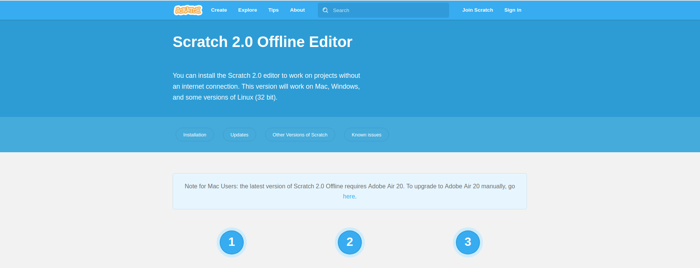
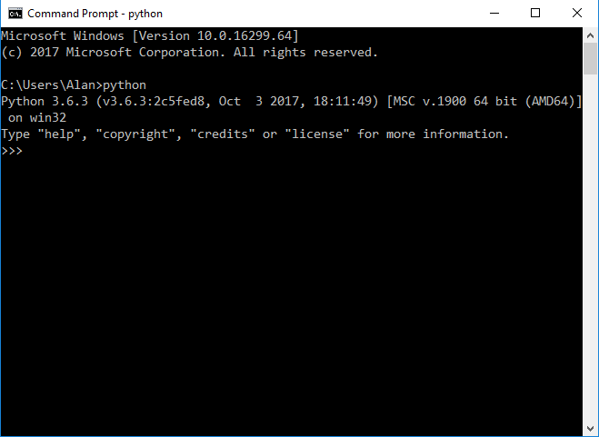
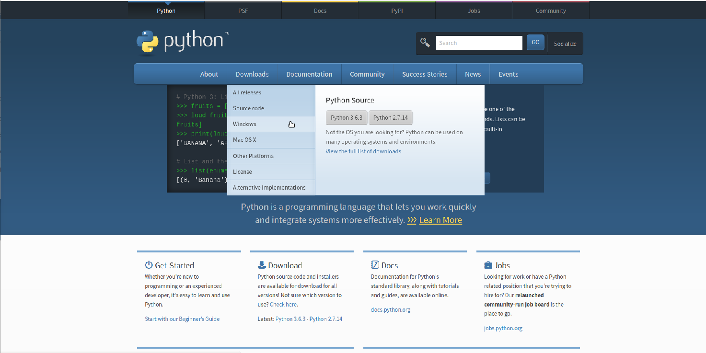
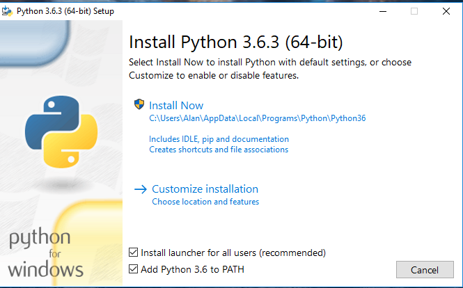
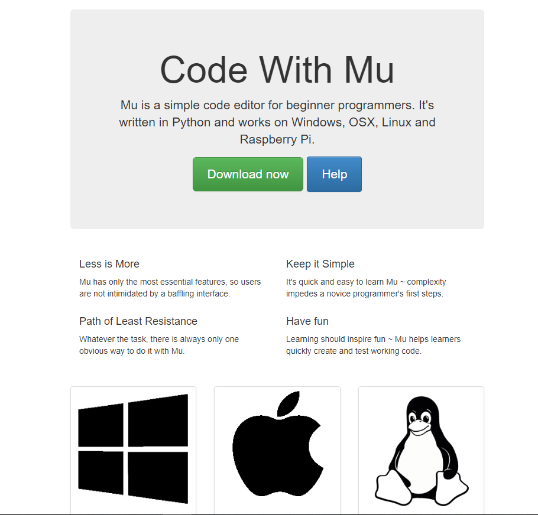
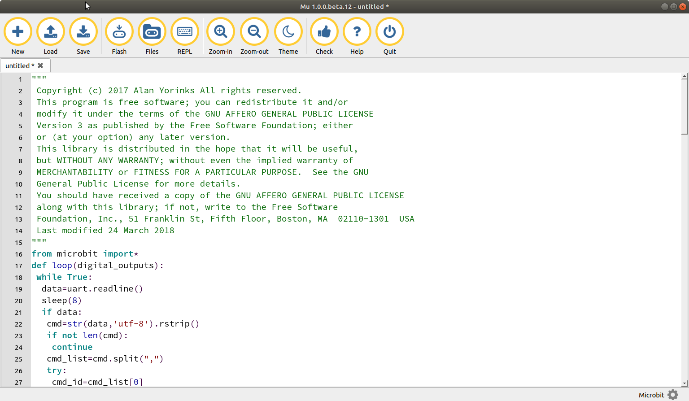

Installation
This section will explain how to:
- Install Scratch 2 on your computer
- Install Python on your computer
- Install the micro:bit mu editor
- Install the s2m script on to the micro:bit using the mu editor
- Install the s2m software on your computer
Installing the Scratch 2 Off-Line Editor on Your Computer
Go to the Scratch download page and follow the instructions to install Scratch on your computer.
Special Note For Raspberry Pi Users
If you are using a Raspberry Pi with the Stretch version of Raspbian installed, Scratch 2 comes pre-installed, as well as both Python 2 and Python 3, so you may skip to the section on installing the mu Editor.

Installing Python
s2m is compatible with Python versions 2 (2.7 or greater) and 3 (3.4 or greater). If you already have Python installed on your computer, you can skip to the next step, Installing the mu Editor.
To check if you have Python installed, open a command or terminal window and type
python
If Python is already installed, you will see something similar to this:

To install Python, go to the Python web site and select Downloads and the appropriate version for your computer.

If you are installing on Windows, make sure to select both check boxes at the bottom of the installation dialog box.

Installing the mu Editor
Go to the mu editor download page and download and install the editor for your system.

Installing the s2m micro:bit Script On The micro:bit
Plug your micro:bit into a USB port on your computer. Start the mu editor and then paste this script into the editor. You may also find the script here. This is a "minified" version of the script.
To see a fully commented version of the script, click on this link.
from microbit import*
def loop():
digital_outputs=[False,False,False]
while True:
data=uart.readline()
sleep(8)
if data:
cmd=str(data,'utf-8').rstrip()
if not len(cmd):
continue
cmd_list=cmd.split(",")
try:
cmd_id=cmd_list[0]
except IndexError:
cmd_id='z'
continue
if cmd_id=='d':
image_dict={"HAPPY":Image.HAPPY,"SAD":Image.SAD,"ANGRY":Image.ANGRY,"SMILE":Image.SMILE,"CONFUSED":Image.CONFUSED,"ASLEEP":Image.ASLEEP,"SURPRISED":Image.SURPRISED,"SILLY":Image.SILLY,"FABULOUS":Image.FABULOUS,"MEH":Image.MEH,"YES":Image.YES,"NO":Image.NO,"RABBIT":Image.RABBIT,"COW":Image.COW,"ROLLERSKATE":Image.ROLLERSKATE,"HOUSE":Image.HOUSE,"SNAKE":Image.SNAKE,"HEART":Image.HEART,"DIAMOND":Image.DIAMOND,"DIAMOND_SMALL":Image.DIAMOND_SMALL,"SQUARE":Image.SQUARE,"SQUARE_SMALL":Image.SQUARE_SMALL,"TRIANGLE":Image.TRIANGLE,"TARGET":Image.TARGET,"STICKFIGURE":Image.STICKFIGURE,"ARROW_N":Image.ARROW_N,"ARROW_NE":Image.ARROW_NE,"ARROW_E":Image.ARROW_E,"ARROW_SE":Image.ARROW_SE,"ARROW_S":Image.ARROW_S,"ARROW_SW":Image.ARROW_SW,"ARROW_W":Image.ARROW_W,"ARROW_NW":Image.ARROW_NW}
try:
image_key=cmd_list[1]
except IndexError:
continue
if image_key in image_dict:
display.show(image_dict.get(image_key),wait=False)
elif cmd_id=='s':
display.scroll(str(cmd_list[1]),wait=False)
elif cmd_id=='p':
try:
x=int(cmd_list[1])
except ValueError:
continue
except IndexError:
continue
if x<0:
x=0
if x>4:
x=4
try:
y=int(cmd_list[2])
except ValueError:
continue
except IndexError:
continue
if y<0:
y=0
if y>4:
y=4
try:
value=int(cmd_list[3])
except ValueError:
continue
except IndexError:
continue
if value<0:
value=0
if value>9:
value=9
display.set_pixel(x,y,value)
elif cmd_id=='c':
display.clear()
elif cmd_id=='a':
try:
pin=int(cmd_list[1])
value=int(cmd_list[2])
digital_outputs[pin]=True
except IndexError:
continue
except ValueError:
continue
if 0<=pin<=2:
if not 0<=value<=1023:
value=256
if pin==0:
pin0.write_analog(value)
elif pin==1:
pin1.write_analog(value)
elif pin==2:
pin2.write_analog(value)
elif cmd_id=='t':
try:
pin=int(cmd_list[1])
value=int(cmd_list[2])
digital_outputs[pin]=True
except IndexError:
continue
except ValueError:
continue
if 0<=pin<=2:
if 0<=value<=1:
if pin==0:
pin0.write_digital(value)
elif pin==1:
pin1.write_digital(value)
elif pin==2:
pin2.write_digital(value)
else:
pass
elif cmd=='g':
sensor_string=""
sensor_string+=str(accelerometer.get_x())+','
sensor_string+=str(accelerometer.get_y())+','
sensor_string+=str(accelerometer.get_z())+','
sensor_string+=str(button_a.is_pressed())+','
sensor_string+=str(button_b.is_pressed())+','
if not digital_outputs[0]:
sensor_string+=str(pin0.read_digital())+','
else:
sensor_string+='0'+','
if not digital_outputs[1]:
sensor_string+=str(pin1.read_digital())+','
else:
sensor_string+='0'+','
if not digital_outputs[2]:
sensor_string+=str(pin2.read_digital())+','
else:
sensor_string+='0'+','
if not digital_outputs[0]:
sensor_string+=str(pin0.read_analog())+','
else:
sensor_string+='0'+','
if not digital_outputs[1]:
sensor_string+=str(pin1.read_analog())+','
else:
sensor_string+='0'+','
if not digital_outputs[2]:
sensor_string+=str(pin2.read_analog())
else:
sensor_string+='0'+','
print(sensor_string)
sleep(10)
elif cmd=='v':
print('s2mb.py Version 1.10 14 April 2018')
else:
continue
sleep(8)
loop()
Flash the script onto the micro:bit by clicking on the Flash button in the editor.

Installing s2m
Open a command a command window and type:
pip install s2m
INSTALLATION NOTE FOR RASPBERRY PI, MAC AND LINUX USERS
You may need to use sudo in conjunction with the version of pip that matches the Python version you are using.
So for Python 2, the install command would be:
sudo pip install s2m
and for Python 3, the install command would be:
sudo pip3 install s2m
This will download and install the program.
Now that all the software has been installed, go to the next section to start using s2m.